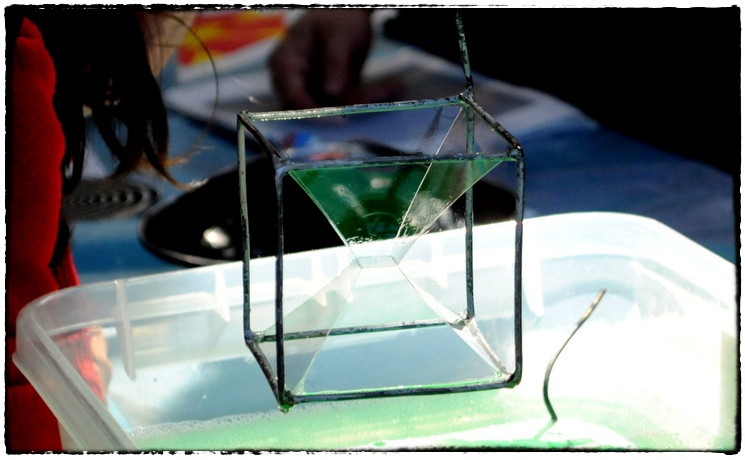
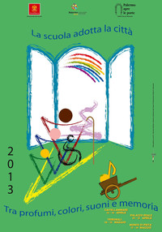
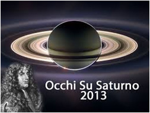
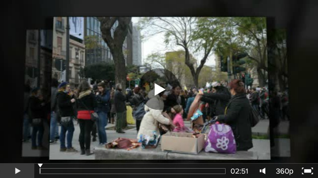
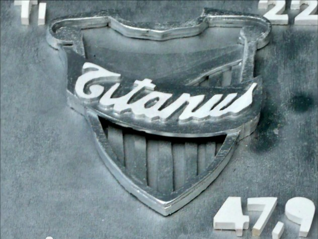
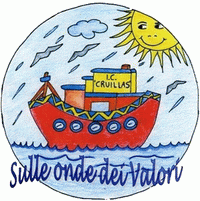
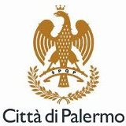

You are hereNews
News
Le ultime notizie di PalermoScienza
Un Mare di Scienza al Centro per la scienza
Questa estate l'associazione PALERMOSCIENZA, con il coinvolgimento di INAF - Osservatorio Astronomico di Palermo, ripropone il progetto Un mare di scienza, ideato per far vivere ai bambini tra i 5 e i 12 anni un’estate all’insegna della scienza.
Dal 17 giugno al 12 luglio, presso il nostro Centro per la scienza, sito in via Salerno 19 presso l'IC Cruillas (mappa), animatori specializzati coinvolgeranno i bambini in laboratori giornalieri, trasformandoli in piccoli scienziati, rendendoli attori delle loro scoperte e creazioni e stimolando la loro voglia di imparare, comprendere e comunicare attraverso il gioco e la manualità. Ciascun laboratorio è auto-consistente in modo che i singoli partecipanti possano inserirsi in qualsiasi giorno trovando sempre cose interessanti da fare. Ogni mattina dunque il tempo trascorrerà alla scoperta dei pianeti e delle stelle, o andando a caccia di simmetrie, o "misurandosi" col concetto di misura o, ancora, sperimentando la scienza da vedere e da mangiare.
In allegato la brochure informativa in cui troverete maggiori dettagli.
Per informazioni e iscrizioni contattare, dal lunedì al venerdì dalle ore 10:00 alle ore 13:00 e dalle 16:00 alle 19:00, la segreteria dell'associazione ai numeri 3668028227 / 3334612148 o per email segreteria@palermoscienza.it.
Al via la seconda edizione de La Notte Bianca della Scuola
 La 19esima edizione di Palermo apre le porte. La scuola adotta la città sta per concludersi: venerdì 31 maggio alle ore 17.00, sulla scalinata del Teatro Massimo avrà luogo la cerimonia di chiusura con la riconsegna al Sindaco, da parte delle scuole partecipanti, delle chiavi della città.
La 19esima edizione di Palermo apre le porte. La scuola adotta la città sta per concludersi: venerdì 31 maggio alle ore 17.00, sulla scalinata del Teatro Massimo avrà luogo la cerimonia di chiusura con la riconsegna al Sindaco, da parte delle scuole partecipanti, delle chiavi della città.
A seguire, l'inauguraione della seconda edizione della Notte Bianca della Scuola, evento conclusivo della manifestazione, rivolto alla scuola palermitana e aperto all'intera cittadinanza.
Per l'occasione alcuni tratti del centro storico saranno chiusi al traffico e dedicati alle molteplici e diversificate attività previste in programma e che si terranno dalle ore 17.00 fino alle ore 24.00.
L'associazione PALERMOSCIENZA, come l'anno precedente, sarà presente in due postazioni: una in via Cavour (nel tratto stradale all'altezza della libreria La Feltrinelli e attiva dalle ore 18.15) e una in via Roma (tra via Napoli e via Bandiera e attiva dalle ore 18.00).
I laboratori ludico-scientifici saranno incentrati sulle mappe, tema scelto dall'Associazione come filo conduttore di tutti i maggiori eventi annuali. Le mappe saranno analizzate, vissute e rivisitare sotto chiavi differenti; saranno proposti giochi, costruzioni e ricostruzioni, oggetti da assemblare, e altro ancora.
Vi aspettiamo numerosi!
PALERMOSCIENZA al... Massimo!
Anche quest'anno l'associazione PALERMOSCIENZA partecipa alla manifestazione Palermo apre le porte. La scuola adotta la città, organizzata dal Comune di Palermo e giunta alla 19esima edizione. Il tema dell'edizione 2013 è "Palermo tra profumi, colori, suoni e memoria".
Tra i prossimi appuntamenti di PALERMOSCIENZA vi sarà un laboratorio incentrato sull'acustica che avrà luogo all'interno della suggestiva Sala Pompeiana del Teatro Massimo, uno degli edifici adottati durante la manifestazione.
Venerdì 17, sabato 18 e domenica 19 maggio, dalle ore 9.30 alle ore 16.30, i visitatori potranno sperimentare la particolare acustica della sala e le caratteristiche di questa branca della fisica. Ogni singolo laboratorio – della durata massima di 15 minuti e pensato sia per adulti che per i più piccoli – , si inserisce nel normale percorso di visita del Teatro Massimo.
L'ingresso è gratuito.
Per ulteriori informazioni contattare il Teatro Massimo:
- www.teatromassimo.it
- tel. 0916053580
- numero verde 800907080

Occhi su Saturno: sabato 18 maggio 2013, una serata per mostrare Saturno all'Italia
Il secondo appuntamento di maggio presso il Centro per la scienza di Palermo si inserisce nell’ambito della manifestazione “Occhi su Saturno” (http://www.occhisusaturno.it/) ideata nel 2012 dall’Associazione Stellaria di Perinaldo per celebrare il 300° anniversario della morte del grande astronomo Gian Domenico Cassini (Perinaldo 1625 – Parigi, 1712).
Per l’edizione 2013 sono previsti oltre 100 eventi in tutta Italia, tra i quali quello organizzato dall’Associazione PALERMOSCIENZA, l’INAF - Osservatorio Astronomico di Palermo e il Piano Lauree Scientifiche Fisica: dalle ore 20.00 alle ore 24.00, nella sede del Centro per la scienza di Palermo, inaugurato lo scorso 9 aprile, e con sede presso l’Istituto Comprensivo Statale Cruillas (via Salerno 19) si terrà una serata di osservazione del cielo ai telescopi nella quale saranno coinvolti alcuni studenti del corso di laurea in Fisica, una breve introduzione su Saturno, osservazioni in remoto, video proiezioni e visita alla mostra permanente di exhibit scientifici costruiti dall’associazione PALERMOSCIENZA e dall’Istituto d'Arte V. Ragusa e O. Kjoara di Palermo.
Parteciperanno all'evento anche l’associazione Planetaria.it, portando un telescopio per l’osservazione serale ed alcuni meteoriti e il giornale scientifico on line Tvspace.it, che realizzerà un reportage della serata.
“Occhi su Saturno” ha il patrocinio della Società Astronomica Italiana, dell’Istituto Nazionale di Astrofisica, dell’Unione Astrofili Italiani, dell’Agenzia Spaziale Italiana e dell’European Astrosky Network.
L’ingresso è gratuito e non occorre prenotare.
Per ulteriori informazioni:
- segreteria@palermoscienza.it
- 366 8028227 - 333 4612148
- http://www.astropa.unipa.it/OcchiSaturno2013.html
Vi aspettiamo!
La Chimica in cucina presso il Centro per la scienza di Palermo
L'associazione PALERMOSCIENZA ha dato il via ai primi appuntamenti presso il Centro per la scienza di Palermo, inaugurato lo scorso 9 aprile, e con sede presso l’Istituto Comprensivo Statale Cruillas (via Salerno 19).
Mercoledì 8 maggio, dalle ore 18.00 alle ore 20.00, gli esperti Chiara Guarisco e Giorgio Nasillo intratterranno i partecipanti svelando i segreti della Chimica in cucina, in un incontro aperto a un pubblico adulto e pensato per un numero totale di 50 partecipanti.
Sarà inoltre possibile visitare la mostra permanente di exhibit scientifici costruiti dall’associazione PALERMOSCIENZA e dall’Istituto d'Arte V. Ragusa e O. Kjoara di Palermo.
Per informazioni e prenotazioni scrivere a segreteria@palermoscienza.it o telefonare al 333 4612148.
Per ragioni organizzative è necessario prenotarsi.
Vi aspettiamo!

Palermo apre le porte. La scuola adotta la città.
Tra profumi, colori, suoni e memoria è cominciata la 19esima edizione di Palermo apre le porte. La scuola adotta la città.
Anche quest'anno l'associazione PALERMOSCIENZA partecipa alla manifestazione Palermo apre le porte. La scuola adotta la città, organizzata dal Comune di Palermo e giunta alla 19esima edizione. Il tema dell'edizione 2013 è "Palermo tra profumi, colori, suoni e memoria".
PALERMOSCIENZA sarà presente con diverse attività secondo il seguente calendario:
venerdì 19 aprile
Un laboratorio pomeridiano per bambini e genitori, presso la Biblioteca delle Balate, dedicato ad alcune scolaresche del quartiere. Nell'arco di due ore il chimico e il fisico si intervalleranno con esperimenti e giochi con la luce e i colori.
venerdì 17, sabato 18 e domenica 19 maggio
Uno degli edifici che sarà adottato durante la manifestazione è il Teatro Massimo. PALERMOSCIENZA terrà un laboratorio scientifico nella Sala Pompeiana: i visitatori potranno sperimentare come qualunque suono prodotto nel centro di questa sala non sia udibile al di fuori della stessa grazie alla forma non simmetrica che determina effetti di risonanza particolari.
venerdì 31 maggio
Notte bianca della scuola
Le attività proposte per questa edizione saranno incentrate sulle mappe, tema scelto dall'Associazione come filo conduttore di tutti i maggiori eventi annuali. Le mappe saranno analizzate, vissute e rivisitare sotto chiavi differenti: il chimico, il fisico, il biologico e il matematico proporanno giochi, costruizioni e ricostruzioni, oggetti da assemblare, e altro ancora.
Nel video alcuni momenti delle attività svolte durante la giornata inaugurale – domenica 17 marzo iniziata con un raduno a Piazza Castelnuovo, sfilata fino a Piazza Verdi, dove sulla scalinata del Teatro Massimo, si è potuto assistere a una breve rappresentazione teatrale tratta dal racconto Il gigante egoista di Oscar Wilde e infine il discorso inaugurale con consegna delle chiavi della città da parte del sindaco Leoluca Orlando agli studenti.
Vi terremo informati con ulteriori e più dettagliate notizie.
A presto!
Centro per la scienza: un'anticipazione di domani
Domani festeggeremo la nascita del primo Centro per la Scienza di Palermo. Nel video qui sotto un'anticipazione di ciò che vedrete.
Si tratta di una bella e speciale Tavola Periodica creata dal Liceo Artistico di Palermo "Vincenzo Ragusa e Otama Kiyohara", che ha vinto nel 2011 il II premio al contest internazionale dell'European Chemistry and Chemical Engineering Education Network (EC2E2N).
Nasce il primo nucleo di un centro per la scienza a Palermo
Martedì 9 aprile 2013, alle ore 10.00, presso l’Istituto Comprensivo Statale Cruillas di Palermo (via Salerno 19), l'associazione PALERMOSCIENZA e la scuola I.C. Cruillas inaugurano il primo nucleo di uncentro per la scienza a Palermo.
Esperienza inSegna 2013: Mappare l'ambiente... avete continuato la cura?
Gli appuntamenti di Esperienza inSegna 2013 continuano!
Si è appena conclusa la sesta edizione della mostra incentrata quest'anno sul tema Mappare l’ambiente ma Esperienza inSegna continua.
La mostra è stata la fase iniziale di una serie di attività proposte dall'associazione PALERMOSCIENZA che saranno infatti distribuite nell’arco temporale di un anno e costituiranno un’animazione permanente rivolta principalmente a tutta la città di Palermo.
Si continua quindi con i seguenti appuntamenti:
Sabato 2 marzo 2013, presso la Sala De Seta dei Cantieri culturali della Zisa di Palermo, Luigi Dei, docente dell’Università degli Studi di Firenze, proporrà due conferenze-spettacolo:
Ore 10.30
Il Bolero di Ravel: la storia scientifica di un puzzle fisico-matematico
La conferenza-spettacolo narra, secondo questa visione fisica, un brano musicale famoso e particolarmente adatto a comprendere la meraviglia che sta dietro alla produzione dei suoni e alla loro propagazione nell’aria: il Bolero di Maurice Ravel.
ore 17.00
Da Schubert a De André: i misteri della voce in musica
La voce recitante interpretata dall’autore, ricorrendo a registrazioni audio o video, accompagnerà il pubblico in un percorso affascinante fra le caratteristiche fisiologiche della voce e le sue applicazioni al canto, avventurandosi nei meandri delle interazioni fra la voce in musica e le nostre percezioni neurofisiologiche.
Vi aspettiamo!
Per informazioni e prenotazioni:
segreteria@palermoscienza.it
366 8028227
333 4612148